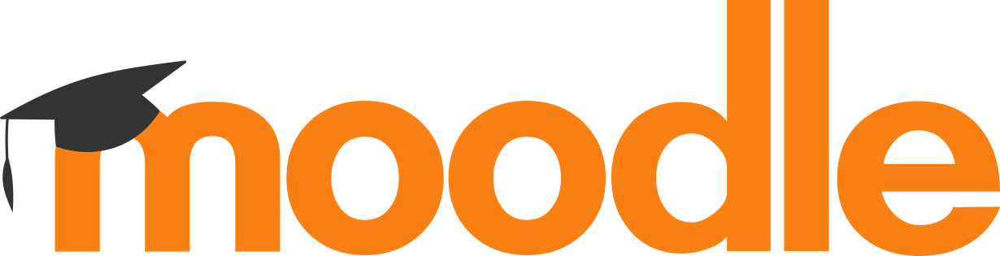

waving_hand Seja bem vindo!

O programa "Cientista Aprendiz" é uma iniciativa de pré-iniciação científica oferecida aos alunos do 8º ano do Ensino Fundamental até a 3ª série do Ensino Médio do Colégio Dante Alighieri. O projeto foi criado em 2006 para atender ao interesse dos alunos pelas atividades de laboratório e pesquisa científica. O programa busca aprimorar a habilidade científica dos participantes e proporcionar experiências reais na área de pesquisa e desenvolvimento, incentivando a autonomia na formulação de questões e hipóteses, bem como na aplicação da metodologia científica.Os critérios para participação no programa incluem interesse e envolvimento em ciências, bom desempenho na disciplina e participação ativa nas aulas. A seleção dos participantes é feita com base na observação do desempenho dos alunos pelos professores de Ciências, que indicam os estudantes mais adequados ao perfil do programa. Como as vagas são limitadas, nem todos os interessados podem ser aceitos, priorizando-se os alunos com maior adequação ao programa.
Em média, são chamados dois alunos do 8º ano e três alunos do 9º ano por sala. Os alunos que participam do programa e passam para o Ensino Médio têm prioridade no preenchimento das vagas disponíveis. O "Cientista Aprendiz" oferece uma oportunidade valiosa para os jovens desenvolverem projetos de pesquisa, estimulando o aprendizado das ciências e a aplicação de suas ferramentas.
scheduleHORÁRIO DAS ATIVIDADES
Os professores e alunos do Cientista Aprendiz reúnem-se semanalmente durante 1h30.
Cada um dos links aqui disponibilizados oferece mais informações a respeito do Cientista Aprendiz, incluindo detalhes sobre como participar e sobre premiações recebidas por alguns dos trabalhos produzidos no Colégio.
Profª. Coordª. Sandra M. Rudella Tonidandel